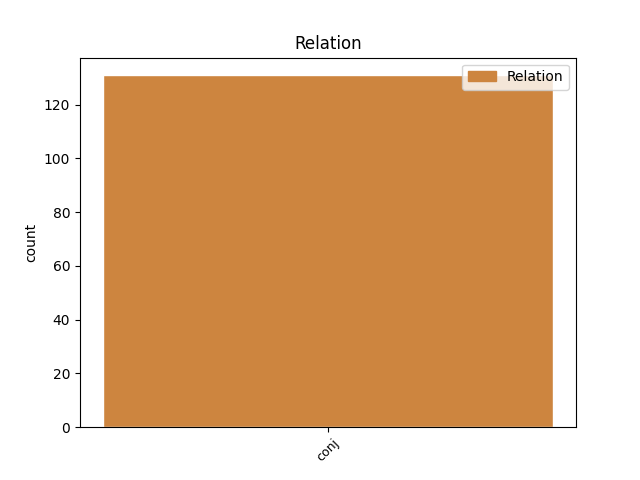
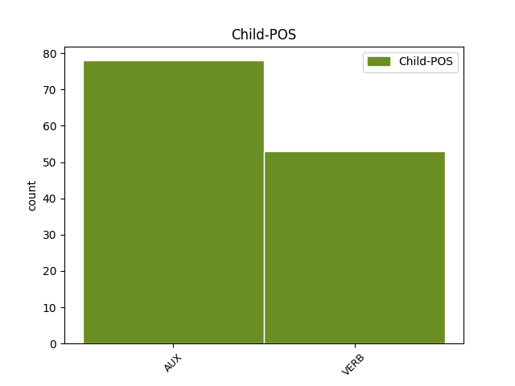

Distribution of features within this leaf


Agreement Rules sorted by frequency.
- When the dependent token is the conjunct(conj) of the head token, and the head token is AUX
1 Over _ _ _ _ 0 _ _ _
2 the _ _ _ _ 0 _ _ _
3 centuries _ _ _ _ 0 _ _ _
4 some _ _ _ _ 0 _ _ _
5 readers _ _ _ _ 0 _ _ _
6 have _ _ _ _ 0 _ _ _
7 posited _ _ _ _ 0 _ _ _
8 that _ _ _ _ 0 _ _ _
9 Shakespeare _ _ _ _ 0 _ _ _
10 's _ _ _ _ 0 _ _ _
11 sonnets _ _ _ _ 0 _ _ _
12 are be AUX V Mood=Ind|Number=Plur|Tense=Pres|VerbForm=Fin 0 _ _ _
13 autobiographical _ _ _ _ 0 _ _ _
14 , _ _ _ _ 0 _ _ _
15 and _ _ _ _ 0 _ _ _
16 point point VERB V Mood=Ind|Number=Plur|Tense=Pres|VerbForm=Fin 12 conj _ _
17 to _ _ _ _ 0 _ _ _
18 them _ _ _ _ 0 _ _ _
19 as _ _ _ _ 0 _ _ _
20 evidence _ _ _ _ 0 _ _ _
21 of _ _ _ _ 0 _ _ _
22 his _ _ _ _ 0 _ _ _
23 love _ _ _ _ 0 _ _ _
24 for _ _ _ _ 0 _ _ _
25 a _ _ _ _ 0 _ _ _
26 young _ _ _ _ 0 _ _ _
27 man _ _ _ _ 0 _ _ _
28 . _ _ _ _ 0 _ _ _
Disagree Examples:
1 Any _ _ _ _ 0 _ _ _
2 permitted _ _ _ _ 0 _ _ _
3 use _ _ _ _ 0 _ _ _
4 will _ _ _ _ 0 _ _ _
5 be _ _ _ _ 0 _ _ _
6 in _ _ _ _ 0 _ _ _
7 compliance _ _ _ _ 0 _ _ _
8 with _ _ _ _ 0 _ _ _
9 Creative _ _ _ _ 0 _ _ _
10 Commons _ _ _ _ 0 _ _ _
11 ' _ _ _ _ 0 _ _ _
12 then _ _ _ _ 0 _ _ _
13 - _ _ _ _ 0 _ _ _
14 current _ _ _ _ 0 _ _ _
15 trademark _ _ _ _ 0 _ _ _
16 usage _ _ _ _ 0 _ _ _
17 guidelines _ _ _ _ 0 _ _ _
18 , _ _ _ _ 0 _ _ _
19 as _ _ _ _ 0 _ _ _
20 may may AUX VM Mood=Ind|Person=3|Tense=Pres|VerbForm=Fin 0 _ _ _
21 be _ _ _ _ 0 _ _ _
22 published _ _ _ _ 0 _ _ _
23 on _ _ _ _ 0 _ _ _
24 its _ _ _ _ 0 _ _ _
25 website _ _ _ _ 0 _ _ _
26 or _ _ _ _ 0 _ _ _
27 otherwise _ _ _ _ 0 _ _ _
28 made make VERB V Mood=Ind|Person=3|Tense=Past|VerbForm=Fin 20 conj _ _
29 available _ _ _ _ 0 _ _ _
30 upon _ _ _ _ 0 _ _ _
31 request _ _ _ _ 0 _ _ _
32 from _ _ _ _ 0 _ _ _
33 time _ _ _ _ 0 _ _ _
34 to _ _ _ _ 0 _ _ _
35 time _ _ _ _ 0 _ _ _
36 . _ _ _ _ 0 _ _ _
1 I _ _ _ _ 0 _ _ _
2 believe _ _ _ _ 0 _ _ _
3 that _ _ _ _ 0 _ _ _
4 the _ _ _ _ 0 _ _ _
5 principle _ _ _ _ 0 _ _ _
6 of _ _ _ _ 0 _ _ _
7 relative _ _ _ _ 0 _ _ _
8 stability _ _ _ _ 0 _ _ _
9 is be AUX V Mood=Ind|Number=Sing|Person=3|Tense=Pres|VerbForm=Fin 0 _ _ _
10 a _ _ _ _ 0 _ _ _
11 fundamental _ _ _ _ 0 _ _ _
12 legal _ _ _ _ 0 _ _ _
13 principle _ _ _ _ 0 _ _ _
14 of _ _ _ _ 0 _ _ _
15 the _ _ _ _ 0 _ _ _
16 common _ _ _ _ 0 _ _ _
17 fisheries _ _ _ _ 0 _ _ _
18 policy _ _ _ _ 0 _ _ _
19 and _ _ _ _ 0 _ _ _
20 a _ _ _ _ 0 _ _ _
21 proposal _ _ _ _ 0 _ _ _
22 to _ _ _ _ 0 _ _ _
23 subvert _ _ _ _ 0 _ _ _
24 it _ _ _ _ 0 _ _ _
25 would will AUX VM Mood=Ind|Person=3|Tense=Past|VerbForm=Fin 9 conj _ _
26 be _ _ _ _ 0 _ _ _
27 legally _ _ _ _ 0 _ _ _
28 inadmissible _ _ _ _ 0 _ _ _
29 . _ _ _ _ 0 _ _ _
1 Madam _ _ _ _ 0 _ _ _
2 President _ _ _ _ 0 _ _ _
3 , _ _ _ _ 0 _ _ _
4 I _ _ _ _ 0 _ _ _
5 do do AUX VM Mood=Ind|Number=Sing|Person=1|Tense=Pres|VerbForm=Fin 0 _ _ _
6 not _ _ _ _ 0 _ _ _
7 wish _ _ _ _ 0 _ _ _
8 to _ _ _ _ 0 _ _ _
9 reopen _ _ _ _ 0 _ _ _
10 the _ _ _ _ 0 _ _ _
11 debate _ _ _ _ 0 _ _ _
12 , _ _ _ _ 0 _ _ _
13 but _ _ _ _ 0 _ _ _
14 I _ _ _ _ 0 _ _ _
15 had have AUX VA Mood=Ind|Person=3|Tense=Past|VerbForm=Fin 5 conj _ _
16 also _ _ _ _ 0 _ _ _
17 asked _ _ _ _ 0 _ _ _
18 for _ _ _ _ 0 _ _ _
19 the _ _ _ _ 0 _ _ _
20 floor _ _ _ _ 0 _ _ _
21 , _ _ _ _ 0 _ _ _
22 to _ _ _ _ 0 _ _ _
23 comment _ _ _ _ 0 _ _ _
24 on _ _ _ _ 0 _ _ _
25 Mr _ _ _ _ 0 _ _ _
26 Barón _ _ _ _ 0 _ _ _
27 Crespo _ _ _ _ 0 _ _ _
28 's _ _ _ _ 0 _ _ _
29 motion _ _ _ _ 0 _ _ _
30 . _ _ _ _ 0 _ _ _
1 This _ _ _ _ 0 _ _ _
2 is be AUX V Mood=Ind|Number=Sing|Person=3|Tense=Pres|VerbForm=Fin 0 _ _ _
3 not _ _ _ _ 0 _ _ _
4 in _ _ _ _ 0 _ _ _
5 itself _ _ _ _ 0 _ _ _
6 anything _ _ _ _ 0 _ _ _
7 dreadful _ _ _ _ 0 _ _ _
8 , _ _ _ _ 0 _ _ _
9 but _ _ _ _ 0 _ _ _
10 we _ _ _ _ 0 _ _ _
11 should shall AUX VM Mood=Ind|Person=3|Tense=Past|VerbForm=Fin 2 conj _ _
12 prioritise _ _ _ _ 0 _ _ _
13 particularly _ _ _ _ 0 _ _ _
14 the _ _ _ _ 0 _ _ _
15 safety _ _ _ _ 0 _ _ _
16 aspects _ _ _ _ 0 _ _ _
17 for _ _ _ _ 0 _ _ _
18 goods _ _ _ _ 0 _ _ _
19 transported _ _ _ _ 0 _ _ _
20 by _ _ _ _ 0 _ _ _
21 road _ _ _ _ 0 _ _ _
22 , _ _ _ _ 0 _ _ _
23 rail _ _ _ _ 0 _ _ _
24 and _ _ _ _ 0 _ _ _
25 inland _ _ _ _ 0 _ _ _
26 waterways _ _ _ _ 0 _ _ _
27 and _ _ _ _ 0 _ _ _
28 incorporate _ _ _ _ 0 _ _ _
29 these _ _ _ _ 0 _ _ _
30 , _ _ _ _ 0 _ _ _
31 as _ _ _ _ 0 _ _ _
32 part _ _ _ _ 0 _ _ _
33 of _ _ _ _ 0 _ _ _
34 the _ _ _ _ 0 _ _ _
35 acquis _ _ _ _ 0 _ _ _
36 communautaire _ _ _ _ 0 _ _ _
37 , _ _ _ _ 0 _ _ _
38 as _ _ _ _ 0 _ _ _
39 soon _ _ _ _ 0 _ _ _
40 as _ _ _ _ 0 _ _ _
41 possible _ _ _ _ 0 _ _ _
42 and _ _ _ _ 0 _ _ _
43 present _ _ _ _ 0 _ _ _
44 them _ _ _ _ 0 _ _ _
45 to _ _ _ _ 0 _ _ _
46 the _ _ _ _ 0 _ _ _
47 acceding _ _ _ _ 0 _ _ _
48 states _ _ _ _ 0 _ _ _
49 . _ _ _ _ 0 _ _ _
1 In _ _ _ _ 0 _ _ _
2 this _ _ _ _ 0 _ _ _
3 regard _ _ _ _ 0 _ _ _
4 , _ _ _ _ 0 _ _ _
5 I _ _ _ _ 0 _ _ _
6 would _ _ _ _ 0 _ _ _
7 also _ _ _ _ 0 _ _ _
8 like _ _ _ _ 0 _ _ _
9 to _ _ _ _ 0 _ _ _
10 refer _ _ _ _ 0 _ _ _
11 very _ _ _ _ 0 _ _ _
12 briefly _ _ _ _ 0 _ _ _
13 to _ _ _ _ 0 _ _ _
14 the _ _ _ _ 0 _ _ _
15 problems _ _ _ _ 0 _ _ _
16 of _ _ _ _ 0 _ _ _
17 the _ _ _ _ 0 _ _ _
18 tunnels _ _ _ _ 0 _ _ _
19 , _ _ _ _ 0 _ _ _
20 which _ _ _ _ 0 _ _ _
21 Messrs _ _ _ _ 0 _ _ _
22 Rack _ _ _ _ 0 _ _ _
23 and _ _ _ _ 0 _ _ _
24 Swoboda _ _ _ _ 0 _ _ _
25 have _ _ _ _ 0 _ _ _
26 referred _ _ _ _ 0 _ _ _
27 to _ _ _ _ 0 _ _ _
28 , _ _ _ _ 0 _ _ _
29 which _ _ _ _ 0 _ _ _
30 , _ _ _ _ 0 _ _ _
31 in _ _ _ _ 0 _ _ _
32 the _ _ _ _ 0 _ _ _
33 case _ _ _ _ 0 _ _ _
34 of _ _ _ _ 0 _ _ _
35 Austria _ _ _ _ 0 _ _ _
36 , _ _ _ _ 0 _ _ _
37 is be AUX V Mood=Ind|Number=Sing|Person=3|Tense=Pres|VerbForm=Fin 0 _ _ _
38 doubtless _ _ _ _ 0 _ _ _
39 a _ _ _ _ 0 _ _ _
40 very _ _ _ _ 0 _ _ _
41 sensitive _ _ _ _ 0 _ _ _
42 issue _ _ _ _ 0 _ _ _
43 , _ _ _ _ 0 _ _ _
44 and _ _ _ _ 0 _ _ _
45 great _ _ _ _ 0 _ _ _
46 effort _ _ _ _ 0 _ _ _
47 should shall AUX VM Mood=Ind|Person=3|Tense=Past|VerbForm=Fin 37 conj _ _
48 be _ _ _ _ 0 _ _ _
49 made _ _ _ _ 0 _ _ _
50 to _ _ _ _ 0 _ _ _
51 improve _ _ _ _ 0 _ _ _
52 their _ _ _ _ 0 _ _ _
53 safety _ _ _ _ 0 _ _ _
54 . _ _ _ _ 0 _ _ _